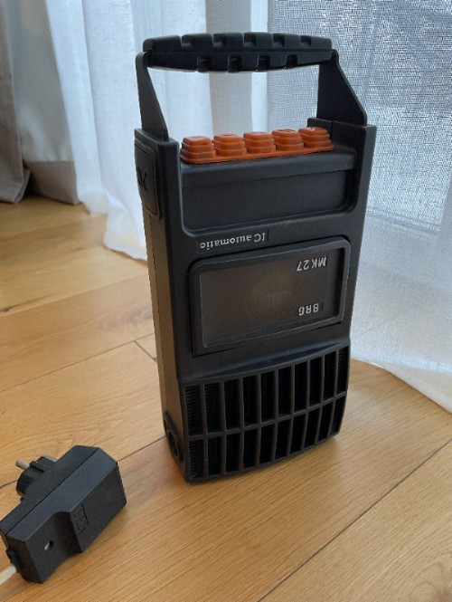
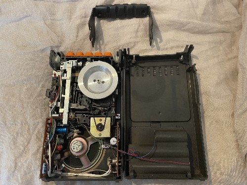
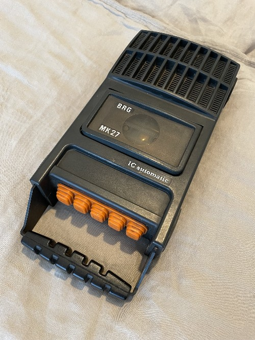
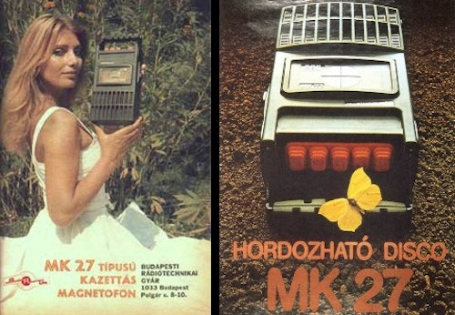

Concert hall
Concert hall
I found this absolute gem in my father's garage. I remember using this when I was like 6 or 7 years old. I thought it will be a fun project to make it work again, but then, I plugged it in and it works just fine! Amazing. It's from 1977 and must have been in storage for more than 30 years, but it still plays perfectly. I gave it a clean and now I have a portable cassette player too!
BRG stands for Budapesti Radiotechnikai Gyar (Budapest Radiotechnic Factory), one of the major radio equipment manufacturers on the Soviet market. The MK series was intended as a portable boombox for camping, weekend houses, etc. The MK27 was designed in 1975 and first available for consumers in 1977. Featuring a funky, youngful, but slightly militaristic design, with rubber buttons. Even though it's look was controversial (some called it a "diver" or a "space" magnetofon), it's unique for sure and it became rather popular and widespread in Hungary after it's release.
It has a 0.8W power output, weights 1.3 kg and runs on batteries (5 x R14, 7.5V) and a power adapter. The tape mechanism is BRG's own design, simple and robust, but not without issues. Forwarding/Rewinding should be used carefully as it doesn't have an auto-stop function and the torque is rather strong, so if left unattended, it can stretch or damage the tape.
There are 5 control buttons, Forward, Play, Stop/Eject, Record, Rewind, the icons on them are not easy to understand though, the Play button facing "up" if the unit in a lying position and the Record having an inverse play symbol and facing "down". It's easy to mix them up and accidentaly press Record. The player can be operated in both standing and lying position, all the labels however are designed to face the user in the lying position, except the technical label on the back.
There is a power adapter plug and a 5pin DIN input connector on one side and a volume control slider on the other side. The handle can be removed by pressing the two big PAT buttons on the sides simultanously and pulling the handle out.
The sound quality of the unit is what you would expect from a player of this era and segment. It's not anywhere near good, but it's fine for casual listening. Overall it's a very nice piece of cassette player history I would say and I'm happy to have it. It resides in my daughter's room now as she often listens to cassettes and mentioned that she would like a boombox.
Here is a video of it in operation.
Advert:
